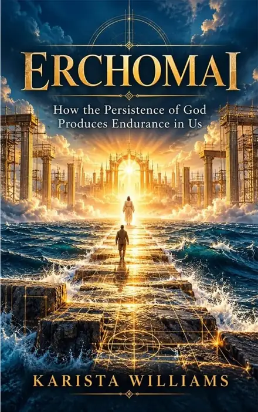

THE INVITATION
ERCHOMAI
How the Persistence of God
Produces Endurance in Us

Explore the Book ↓SCROLL TO REVEAL THE JOURNEY ⌄
THE JOURNEY CONTINUES
Come.
Erchomai — How the Persistence of God Produces Endurance in Us
Book details and purchasing links will be added here.